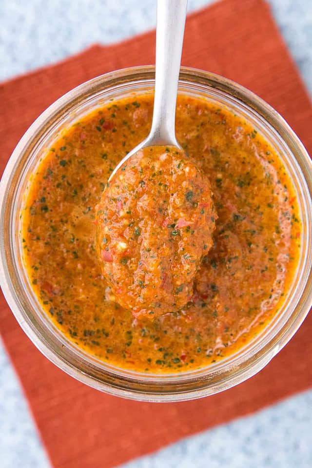

White boy kambuzi: a honky delight

Will the real kambuzi please stand up?!
Alright, let's drop some beats and cook up a storm with a fermented hot sauce that's gonna make you feel like you're living in a dream. We're talking Kambuzi chilis, so get ready to spice up your life in the sickest way possible.
Ingredients:
- Kambuzi chilis: a pound or two, depending on how much heat you wanna brew.
- Garlic cloves: about six or seven, minced up fine, to add a kick that'll blow your mind.
- Sea salt: about two tablespoons, to bring out the flavor without any doubt.
- Water: enough to cover the chilis, so they can ferment and get real chill.
- Honey or sugar: a tablespoon or two, to give it that sweetness that'll stick like glue.
- Apple cider vinegar: a splash or more, to add some tanginess that'll make you soar.
Yo, this sauce ain't just hot, it's a flavor sensation,
Kambuzi chilis bringin' heat to every occasion.
Fermented to perfection, it's a culinary revelation,
One taste and you'll be hooked, no hesitation.
Now, let's get down to business with the steps to make this sauce and feel like a culinary boss:
- Chop up those Kambuzi chilis real nice and fine, so they can release all their heat and shine.
- Toss 'em in a jar with the garlic and sea salt, then give it a shake like it's nobody's fault.
- Pour in the water 'til it covers the mix, then seal it up tight and give it a quick fix.
- Let it sit for about a week or two, in a cool, dark place where it can do what it do.
- When it's good and funky and fermented just right, blend it all up 'til it's smooth and tight.
- Add in the honey or sugar for a touch of sweet, then splash in the vinegar to make it complete.
- Give it a taste and adjust as you please, then bottle it up and get ready to tease.